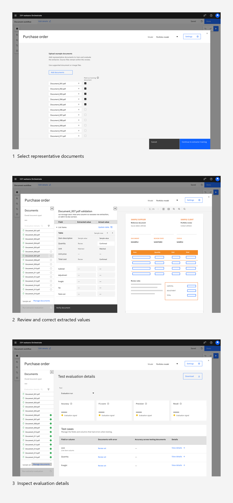
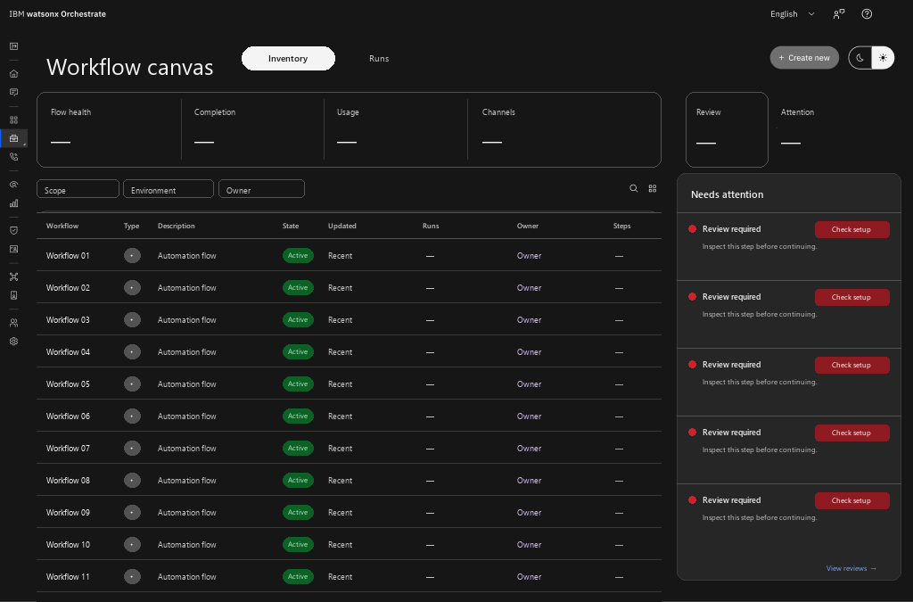
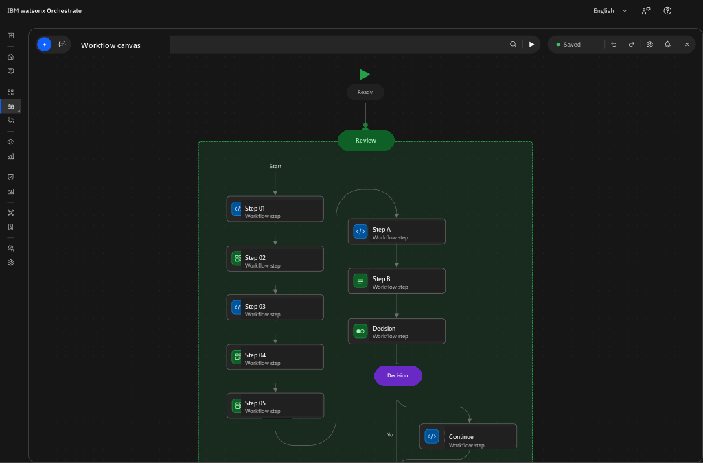
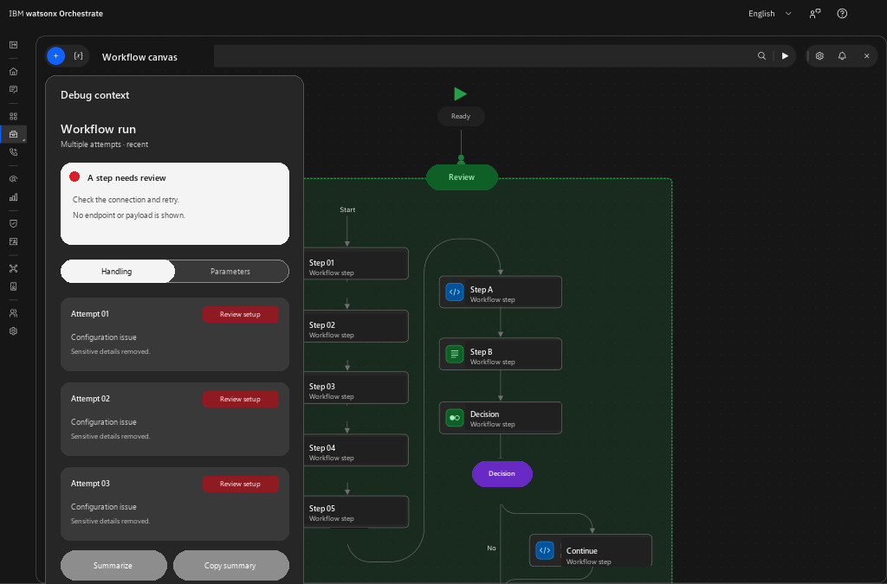

wxO Canvas · 2024–present
Designing the workflow canvas.
A protected story about shaping the shared language for building, inspecting, and improving AI workflows: from reusable canvas mechanics to human review and an exploratory operational future.
Complexity needed a visual grammar.
The early system work joined Carbon discipline with a reusable canvas language: nodes that could signal different kinds of work, connectors that made insertion and direction visible, and controls that could hold branching, repetition, parallel paths, and user activity.


Evidence boundary: these boards show design-system and interaction vocabulary. They do not assert that Canvas 1 was released in this exact form.
Document Processing made the system accountable to uncertainty.
Document Processing is a feature thread inside the broader wxO Canvas story. Classification, extraction, table data, low-confidence review, and evaluation tested whether specialized work could remain legible inside the shared workflow model.
Automation needed a path back to judgment.
The combined Document Extractor and Evaluation experience released in July 2026. The feature sequence below is bounded, sanitized evidence from the separately verified private package.
Open the focused Document Processing feature story
It supports a structural point: automated output, human review, and quality evaluation belong to one connected workflow.

Human work belongs inside the workflow model.
A user activity could not be treated as an interruption outside automation. It needed a clear beginning, a bounded task, enough context for judgment, and a return path into the flow.
Context travels with the task
The person reviewing a step needs the source material, state, and decision boundary close together.
Judgment has a return path
Review is part of the model only when the correction can move the workflow forward without hiding uncertainty.
The later work moved closer to the code.
Specification rigor became implementation-aware practice: understanding constraints, separating interface iteration from backend dependencies, and documenting reusable states so design intent could survive handoff.
Reusable patterns
Shared states and components reduced one-off interaction decisions across related workflow experiences.
Constraint-aware iteration
Closer collaboration with implementation made technical limits visible earlier without turning design exploration into a release claim.
What if workflows became operational objects?
Canvas Future explored a wider frame: inventory, attention, authoring continuity, and contextual diagnosis. This sequence is direction-setting rather than release evidence.
Exploration · not shipped evidence


A shared language has to hold both automation and judgment.
The throughline is not a single canvas screen. It is the relationship among system vocabulary, specialized feature work, human review, and implementation constraints.
Protected private candidate · local sanitized assets · no public implementation authorized